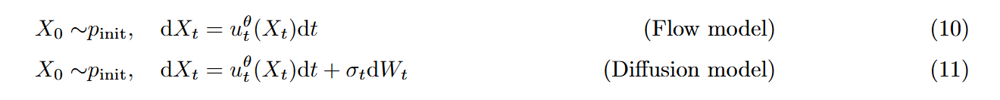

Diffusion and flow matching
本文来自于MIT的这份Notes
An Introduction to Flow Matching and Diffusion Models
1. Introduction
现阶段AI的热潮在于构建优秀的生成模型，在其中最为成功的模型之二便是Diffusion和Flow model；Diffusion and Flow model基于ODE/SDE来模拟噪声到数据的变化过程，虽然从代码上，这些模拟过程都相当简单，但是SDE的技术性质会使其看上去难以理解，尤其是各种优化方案
值得一提的是，Diffusion的模型的最初提出的理论基础并不是SDE，而是后续人们在优化Diffusion和探索Flow model和Diffuion model联系的过程中，发现这两个模型的数学本质，ODE/SDE是其最本质的数学理解，我们在本文中也会介绍一些其他的
1.1 Some Concepts
我们在本节列出所有的概念，和下面公式中的表述一一对应
- \(R^d\): 指的是d维的实数向量
- \(X\): 一条轨迹Function，给你时间，可以获得对应的点的坐标\(X_t\)或者我们也用 \(x\) 来表示
- \(u\): 是指速度，速度是时间和位置的函数， \(u_t(x)\)
- \(z\): 是指真实数据上的一个点
- \(p(·|z)\) 和 \(p(x|z)\) 本质上是一个东西，一个指的是分布，一个指的是对于x的概率
2. Flow and Diffusion Models
Flow model 和 Diffusion model 分别在模拟ODE和SDE过程
2.1 Flow Models
我们从ODE过程开始，ODE的解是一个轨迹，其从时间 t 映射到空间\(R^d\) ，任何一个样本都是这个空间中的一个点，不论是图像，视频或者是蛋白质结构
ODE的解是一个轨迹，下面这个式子中的X是一个function如下，t从[0, 1]的范围中取，知道t你能够推出其在这个空间中的位置，这就是所谓的解是一个轨迹
对于每个时间和位置，ODE会定义一个vector field来告诉你在这个地方的速度向量u，u是一个function，如下
在实践中，向量场u往往非常复杂，因此无法直接计算积分解决，一般是通过欧拉法，分步，假设单步之内的速度是不变的，进行计算解决
基于欧拉法，我们可以用神经网络进行建模，即用神经网络来拟合每个step的变化，也即 \(u_t\) 由此，我们来提供Flow Model的完整定义，如下
值得注意的是神经网络拟合的是Vector field（也即每个点X在t的速度）而不是Flow，为了计算Flow，我们需要基于Vector field+欧拉法模拟ODE
2.2 Diffusion Models
Diffusion model基于SDE，SDE是ODE的一种通常情况，在ODE的基础上引入了随机扰动，随机扰动是一种基于高斯运动的随机变化，我们用布朗运动来描述它
布朗运动(Brownian Motion)：从直观上讲，布朗运动是一段连续地随机游走，数学表示记为 \(W = (W_t)_{0\leq t \leq 1}\) ，布朗运动有以下特性： 1. 布朗运动的增量为高斯分布，也即其运动分布的方差会随着时间线性增加 2. 布朗运动任意时间节点的增量是一个独立随机变量 由上面两个特性可知，布朗运动满足 \(W_{t+h}=W_t+\sqrt{h}\varepsilon_t\ \ \ \ \varepsilon\sim N(0,I_d)\)
对于一个ODE而言，只要初始值相同，其模拟的结果也会相同，而对于一个SDE而言则不是这样，SDE是一个随机过程，对于SDE来说，运动的轨迹每次都是不一样的，并且每一状态都是一个随机变量而非是一个点
从ODE到SDE的过程就是增加了一个布朗运动的随机扰动
由此衍生出基于欧拉法的Euler-Maruyama method，在每一step里面增加一个随机扰动，这个扰动中有一个超参数控制扰动的size，当其为0的时候，SDE转化成ODE
始终记住，我们的目标是讲简单的分布转换成复杂的真实分布，同样地，我们会参数化（神经网络拟合）\(u_t\) , 唯一地区别是我们在这边加上了一个基于高斯分布的随机扰动
3. Constructing the Training Target
对于Flow model和Diffusion model

实际要训练的参数是一致的

始终牢记这个参数化的速度是指初始分布转移到目标分布的速度，也即我们要拟合的是这个速度
3.1 Conditional and Marginal Proability Path
我们的训练目标，就是这个分布转换的过程，实际上是一个概率路径，也即一个概率分布随着时间演变的过程，也即从最初的原始分布到最终的真实数据分布的过程
我们首先定义条件概率路径（conditional probability path），也即一个点的概率路径，比如一张图片到一个高斯噪声的路径

其次我们定义边际概率路径，也即对于整个真实的数据集的转换，将整个真实的数据集变为高斯噪声，实际上对于特定时间t的概率分布，就是对于该t时间的条件概率去求积分得到边际概率

对于这两种概率路径的对比，我们可以参照这个图

需要注意的是，虽然上面一直提到高斯噪声，只是为了和大家熟悉的Diffusion联系起来罢了，初始分布不一定需要是高斯
对于概率分布的变化，也可以参照这个图，背景中的红色块是指初始的高斯分布，五角的蓝色块是最终的真实分布

对于Diffusion的版本，我们提供一个例子Gaussian Conditional Probability Path
3.2 Conditional and Marginal Vector Fields
概率路径是我们已有的，也即加噪过程，加噪过程的逆向，就是我们已有的概率路径，也是训练的数据集合；而向量场是我们最终的目标，我们需要训练神经网络来拟合向量场，使其采样的时候生成的轨迹分布，符合我们已有的概率路径
我们在上文中定义概率路径的时候采用了插值法，这是经过人为设计的结果
我们来看看如何通过已有的概率路径 \(p_t\) 来构造vector fields，对于条件概率路径和条件向量场的关系我们有

上述公式表示对特定的数据点的运动关系，非常清晰，但是对于实际的 \(u_t^{target}(x)\) 却很难求解，我们可以用一些技巧来进行构造
- 其中Example11让我们从高斯的ODE中获取条件概率路径的数学结果，其中的 \(\dot{a}_t\) 是指a对t的导数

我们来引入连续性方程，连续性方程描述了在一个流场中，概率密度的变化率和其通量散度的关系，在这里是指概率路径和向量场的关系，什么样的向量场才能产生对应的概率路径

为了理解连续性方程，我们要引入 \(div\) 的概念，div是一个表示divergence的概念，散度

对于连续性方程，左侧的式子等同于概率路径 \(p_t(x)\)在时间上的导数/变化率，右侧的概率散度表示概率质量的净流出
随后我们可以用连续性方程求解边际向量场

3.3 Conditional and Marginal Score Functions
先前我们已经能够定义了向量场，跟随这个向量场，我们就能把初始分布转移到真实分布。
但是对于SDE来说，由于引入了随机扩散这个过程，导致其如果按照这个向量场的话，最终地分布会比真实分布更发散，这个Score Function就是为了解决这个问题，用于抵消随机扩散地影响
Score是表示分布的移动的导数，而Flow中的u是具体的点运动的导数
4. Training the Generative Model
4.2 CFG
CFG 是指分类无关知道Classifier-Free Guidance，是为了让Text2Image这类得模型，在生成的指令遵循性和生成的多样性+质量上达到一个平衡

其方式是讲最终预测的噪声转换成上述形式
1 2 3 4 5 6 7 8 9 10 | |
我们在前向的时候，会复制一份latents，然后用不同的prompt_embed来做预测，完成之后把预测的结果拆开，然后用CFG公式拼起来
1 2 | |
宏观上流程可以如下
1 2 3 4 5 6 7 8 9 10 11 12 13 14 15 16 17 18 19 | |
4.3 A Guide to the Diffusion Model Literature
由于神经网络领域往往有实验先行理论落后地情况，导致同一个领域往往有好多套的理论解读，这也是一个逐渐成熟的过程，本章节为出现的一系列方案进行辨析
Discrete time & continuous time
早期的论文里用来Markov chains来解读Diffusions，这是一种离散时间的表达，在这种解读中，Loss Function是通过优化ELBO这一下限来近似。后续的工作证明这种方案本质是对SDE的近似，在连续的时间下，ELBO变为实际的结果而非下界（转换为一个等式）
在早期人们将扩散模型的目标理解为预测噪声，而实际上来说应该是预测速度，预测噪声是一种更加低效的做法
Forward process & probability paths
5. Rethink Diffusion Model
上述内容是Diffusion Model理论中的情形，但是到了真实的高维的数据分布中，与理论会出现出入

真实的高维数据分布中，数据点分布较为稀疏，在噪声幅度较低时候，模型几乎没有再预测整个数据分布的均值，而是预测最近的单个样本，上述实验展现了以下内容
- 在低维，低分辨率的实验中，模型的预测保持一个平滑的分布，但是到了ImageNet这些高维实验中，模型的预测到一个低噪区间里会迅速锐化
- 随着分辨率的提升（ImageNet256->512），模型的预测越来越容易退化，即便是在较大的噪声范围内
值得注意的是上述实验直接在像素空间中训练了生成模型，没有使用VAE，这个实验也证明了VAE的压缩对于生成模型训练的重要性，但是传统的理论分析往往忽略了这一点
在这里论文提出一个新的视角来理解生成模型，从信号的角度，从这个角度来看，图像可以区分为两部分
- 低频 大块的色块
- 高频 图像的细节，边缘，纹理
在高噪声环节，模型去预测低频细节，也就是色块，而在低噪声环节，模型执行高频的细节补全。这是非常显然的，因为在MSE的训练中，高噪声环节只有低频细节还保存着，只有低噪声环节中模型才能学习到高频的内容